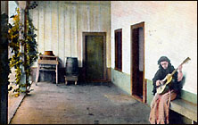

Lindo texto de dylan, satirizando los argumentos autoindulgentes algunos católicos mediáticos (yanquis, claro está) que se quejan (hay-que-hacer-algo-o-la-iglesia-se-va-a-los-caños) contra el Papa por sus "inacciones"...
Lo gracioso es la trasposición en que se funda la sátira: Dios-universo en lugar de Papa-iglesia...
Me dan ganas de traducirlo (y quién sabe...), pero también... sería estropearlo, casi seguro...
-
God has let me down!
(An opinion piece by Scribendum Q. Bluster)
You know, you gotta hand it to God. He's kinda good, I suppose.
He made the world in six days -- can't beat that! All those cool stars & galaxies, rainbows & people. Well, he made centipedes, too. So we mustn't praise him too sycophantically.
But what has he done lately? It seems that after eons & eons of being God, he's sinking into a troubled twilight of passivity and weakness.
I mean, he's omnipotent and omniscient and all that jazz, right? So why did he give free will to persons other
than myself -- knowing the dire consequences that would almost certainly ensue? Why does he allow
murderers to exist? Why does it rain? How come I haven't met a mermaid? What is God's
explanation for the continued existence of Tom Petty?
...
And through it all, God is praised and lauded by these blind, deaf and dumb sycophants who insist he must be adored.
It's a cult of personality, that's what it is.
He allows mudslides, summer, and the music of Marilyn Manson -- and still, still, still, he wants to be adored.
You know, a good God would put the comfort and material well-being of his creatures (especially me!) before all else.
But no, God does what he wants to do. He won't stop the bad people, the annoying people, the people that disagree with me.
I just don't get it. He's let me down, he has.
It pains me to say this, but while I have a profound admiration for his past accomplishments, I think he's been culpably permissive of late...
-
FANDANGO
Misterio del fandango que se crece
como una voz antigua y horadada.
Que nace cuando por vez de inicio
un muchacho lo toca.
Es una riada vieja,
una como alba que crece en los ojos.
Una queja,
como una luz que sube por el agua,
como una desolada voz sin cielo.

Los pájaros escondidos en las yemas,
los huesos duros en la cara de piedra
y los caminos de la música alerta
como galgos, corriendo entre los árboles.
El fandago se sube a la mañana
como una estrella de humo.
Para llorar lo espero
entre mis cosas.
Casi de frío yerto, oscura mortandad.
Sin azucenas. De negro y de morado.
José Manuel González
En inglés:
Amy comenta un interesante artículo de Dave Amstrong, que encara la eterna pregunta de los católicos más "ortodoxos": "¿Por qué el Papa no hace algo con los disidentes-modernistas-heréticos ? ". ¿ No es una especie de flojedad el negarse a ser más duro, a excomulgarlos por ejemplo ?
Interesante también algunos ejemplos que trae, para ilustrar (la excomunión del rey Enrique VIII, el "silencio" de Pío XII).
Amy (de las obsesionadas con el tema de los "malos obispos de EEUU")
se pregunta si aquellos argumentos para tener mano suave con los "heterodoxos doctrinales"
pueden aplicarse en este otro asunto...
Los
comentarios al post también son de interés.
También es cierto que esto es un vicio, pero por ahora no parece hacer daño (a mí al menos). Quita tiempo, eso sí... estoy leyendo algo menos....
La semana pasada leí "Nuestro hombre en La Habana", de Graham Greene; ta bien, pero tampoco me pareció gran cosa ... no es lo mejor de Greene, en todo caso.
Ahora, releyendo The great Gatsby, de Fitzgerald; a ver si en una segunda mejor lectura puedo disfrutarlo como seguramente se merece.
Y se fue el primer cuatrimestre de weblog. Interesante experiencia, para mí, al menos. No sé cómo irá evolucionando esto, pero por ahora el asunto marcha sin mayores esfuerzos ...
Y hoy ha sido el día de más visitas (~ 230 ) , supongo que Google y otros buscadores están cambiando sus índices. Poco quiere decir este rating, sobre todo porque con el título que tiene este weblog, pesca a muchísimos buscadores desorientados. Si me voy al otro extremo (haciendo estadísticas sobre cookies, etc) y quedándome con lectores seguros, pareciera que no entra casi nadie. Sin embargo, cada tanto llega algún mail (alentador, en su mayoría).
No viene mal recordar, me digo, que por cada admirador que te aplaude hay cinco más que no dicen nada... pero que por cada uno que te critica, hay 100 más que te desprecian demasiado como para hacértelo saber. Y que hasta los imbéciles más indudables suelen tener admiradores.
Dicho esto, igual vaya un saludo agradecido para los que leen esto; en especial para los que alientan (pese a todo lo dicho, uno no está tan despegado como para no necesitar aliento), y para los que linkean (ayer me agregó el de flos carmeli).
Que aunque haya una probabilidad de que los aplausos sean equivocados,
yo siempre trato de no guardarme los elogios; por las dudas, aunque sea ...
El Zorzalito
El mismo extrañaba la potencia y agilidad de su garganta. La Calandria, para oírlo mejor, voló hasta su rama en silencio. El Zorzalito entusiasmado había iniciado una magnífica sinfonía. El zumbido de la brisa, las quejas de las hojas, la orquesta rumorosa del amanecer, el aliento de la noche estrellada, el grito de los árboles bajo el sacudón de la tormenta, todas las hondas impresiones que había recogido en su nido, pasaron a su garganta y se vertieron en el silencio crepuscular convertidas en sonidos tan hermosos que la Calandria creyó que ella misma nunca había entendido el monte hasta el momento...
Calló el Zorzalito y se hizo un silencio armonioso en el monte.
-Qué feo queda. Cuando hincha la garganta parece un sapo.
Y la Calandria, el Jilguero, el Tordo, el Cardenal y el Boyero, que entendían de música, arrobados en su admiración, no dijeron nada.
El Zorzalito levantó el vuelo todo cortado, y se perdió a lo lejos convencido de haber hecho un papelón. Y desde aquel día ya no cantó jamás. Porque cuando el corazón le pedía canto, le venía a las mientes la imagen de la garganta del sapo y el alma se le caía a los pies, amargada para siempre por aquella primera y repentina desilusión...
Los que entienden, que alaben a los que valen, no sea que vengan los que no valen y se hagan dueños del mundo.
Y entonces un Gorrión superficial que no entendía de música, exclamó bruscamente:
Me escribe Alejandro González, a cuento de lo de trivial de ayer:
-
Trivial viene, efectivamente, de trivium, «encrucijada de tres vías, de
tres caminos», o de Trivia, «la de los tres caminos: Diana, Hécate». El
adjetivo existía ya en latín: trivialis. La idea parece ser la de algo
de la calle, que todos pisan, sin valor. En las encrucijadas se
abandonaban restos, basuras literales o simbólicas (objetos impuros), y
se agolpaban personajes marginales. También se las suponía habitadas por
'residuos psíquicos': los fantasmas. Con frecuencia, los cadalsos se
levantaban en encrucijadas, y se arrojaban también allí los restos de
criminales ajusticiados en otros lugares. Es frecuente la idea de que
los desesperados acuden a los trivios a medianoche para hacer pacto con
el Diablo o la Estantigua.
La trivialidad tiene algo de fútil y de siniestro: algo marginal, residual, sin importancia para el centro; pero que llega a ser lo bastante molesto como para que haya que expulsarlo. Visto de otro modo, es algo por lo que involuntariamente pasas todos los días, pero que nadie querría llevarse a su propia casa: como esa capa negra que se pega a los zapatos, y que hace que nos los quitemos al pasar el umbral, para ponernos las zapatillas.
Alguna vez me ha parecido tener la intuición de lo trivial cuando estaba comiendo con fruición un guiso con salsa y algo me interrumpía (o simplemente me cansaba, saciado el apetito, y mi atención se iba a otra cosa). Un minuto más tarde, la misma salsa deliciosa en la que uno mojaba el pan se ha convertido en algo que deseas perder de vista lo antes posible y que te resultaría repugnante probar. Hécate se lo ha apropiado
Recién caí en esta página, del Cardinal Ratzinger Fan Club. Me hizo gracia...
El contenido es más o menos coherente... gente más bien conservadora (sin excesos), con discursos como:
-
As Grand Inquisitor for Mother Rome, Ratzinger keeps himself busy in service
to the Truth: correcting theological error, silencing dissenting theologians (like Hans Kung),
and stomping down heresy wherever it may rear its ugly head -- and, consequently, has
received somewhat of a notorious reputation among the liberal
media and 'enlightened' intellegensia of pseudo-Catholic universities.
El material online parece bastante abundante (pero en inglés, claro) ; los autores recomendados (von Balthasar, de Lubacq, Guardini ... ) son previsibles.
Lo que no era tan previsible , para mí al menos, era que llegaran al
"merchandise", con
gorritas y tazas (!) . Bizarro, realmente ....
Pero bueno... el que quiera regalarme algo,
ya sabe...
¡Quiero el gorrito de Ratzinger!
-
Hay en la pobreza una poesía
que no tiene ningún equivalente.
Es la poesía que proviene de la carne miserable,
vista en la verdad de su miseria.
La contemplación de las flores del cerezo en primavera,
no iría derecho al corazón -como lo hace- si su
fragilidad no fuera tan visible.
En general una condición de la extrema belleza
es la de estar casi ausente, por la distancia
o por la debilidad.
Los astros son inmutables,
pero lejanísimos; las flores blancas están ahí,
pero ya casi marchitas.
Del mismo modo, el hombre sólo puede amar a Dios
con un amor puro, si lo concibe como estando
fuera del mundo, en los cielos; o bien
presente en la tierra al modo humano, pero
débil, humillado y matado.
O también, lo que
es un grado de ausencia aún más grande,
presente como un minúsculo trozo de materia
que se da para ser comida.
En un post de flos carmeli de hoy, y siguiendo un post de dylan (dos weblogs de lo mejorcito), Steven se manda con un verso propio en la variante de un dáctilo doble.
Para los que (como uno) no tienen mucha idea de versificación antigua, esta forma consta de ocho versos, y la mayoría son un par de dáctilos. Un dáctilo es algo así como un grupo de tres sílabas (un pie) del cual la primera es acentuada (en latín, larga). Salvo los versos 4 y 8 que pierden las dos últimas sílabas. O sea que cada una de las dos "estrofas" sería de la forma:
tá-ta-ta tá-ta-ta tá-ta-ta tá-ta-ta tá-ta-ta tá-ta-ta tá-ta-ta tá(se entiende algo?) Además, este "dáctilo doble" tiene otras restricciones:
- El primer verso consta de dos palabras (a veces iguales) sin sentido, como una especie de introducción sonora (el clásico parece ser, en inglés "Higgledy-Piggledy")
- El segundo presenta el "sujeto" del poema
- El tercero suele ser un predicado, y presentar el "tema"; fuera de esto, no tiene otras restricciones, al igual que el quinto y el séptimo
- El sexto suele ser una sola palabra larga (vale armar palabras "compuestas")
- Los versos cortos (cuarto y octavo), agudos, riman (el resto no).
-
Boom-chucka Boom-chucka
Susan Ivanova
Second banana on
Babylon 5
Known for her prophecies
Eschatological:
"No one gets out of this
Station alive!"
/* * Higgledy Piggledy, * Ritchie and Kernighan * Wrote the definitive * Book about C. * If I were grading it, * Alphanumerically, * I'd rate the language at * Least a high B. */
-
Higgledy-Piggledy
Righteous Pelagius
Got off his horse and
fell on his face.
Said Bishop Hippo quite
unsympathetically,
"Surely your doctrine leaves
some room for grace."
Releyendo lo que escribí hace poco, encuentro este involuntario juego de palabras (o algo así): Después de mencionar los tres caminos posibles que San Juan de la Cruz señala en su subida al Monte , digo : "... esto es trivial" ...
Efectivamente.
PD: Leo acá que la etimología de la palabra estaría ligada al cruce de tres caminos (tres-vías) en que Edipo encuentra y mata a su padre .... No me inspira mucha confianza, y no tengo ningún diccionario etimológico a mano...
gratisdate.org es una fundación española bastante interesante, por su objetivo, y por su página. Muy atípico: un sitio religioso, con un diseño web que tiene ciertas pretensiones en su estética... y que milagrosamente "salió bien".
Para mirar (digo, y me digo a mí mismo), el contenido de las secciones Textos, Magisterio y Lecturas.
Uf! Pasé bastante tiempo para agregar el buscador (ver a la izquierda, abajo de los archivos); pero es una satisfacción trabajar con productos tan completos y profesionales como estos de www.atomz.com. Templates totalmente personalizables (fijate: hacés una búsqueda y parece que todavía estuvieras en este sitio). Muy bueno.
Ratzinger y la belleza:
-
«hoy día el mensaje de la belleza es puesto en duda por el poder de la mentira, que se sirve de varios estratagemas».
«Uno de estos es el de promover una belleza que no despierta la nostalgia de lo inefable, sino que más bien promueve la voluntad de posesión», afirmó.
«¿Quién no reconocería, por ejemplo, en la publicidad esas imágenes que con extraordinaria habilidad están pensadas para tentar irresistiblemente al hombre a apropiarse de algo y a buscar la satisfacción del momento?», preguntó.
De este modo, constató Ratzinger, el arte cristiano se encuentra hoy entre dos fuegos: «debe oponerse al culto de lo feo, según el cual toda belleza es un engaño, y tiene que enfrentarse a la belleza mendaz que hace al hombre más pequeño».
El cardenal citó entonces la frase de Fiódor M. Dostoievski (1821-1881) «La belleza nos salvará», en la que el escritor ruso se refiere a la belleza redentora de Jesucristo.
«Quien cree en el Dios que se manifestó precisamente en las semblanzas de Cristo crucificado como "amor hasta el final" sabe que la belleza es verdad y que la verdad es belleza, pero en el Cristo que sufre aprende también que la belleza de la verdad comprende la ofensa, el dolor, y el oscuro misterio de la muerte».
De este modo, sabe que la belleza «sólo puede ser encontrada en la aceptación del dolor y no en ignorarlo».
Hoy 21 de agosto, fiesta de San Pío X, Papa entre 1903 y 1914.
-
"En su primera encíclica Pío X anunciaba que su meta primordial era la de "renovarlo todo en Cristo" y, sin duda que con ese propósito en mente, redactó y aprobó sus decretos sobre el sacramento de la Eucaristía. Por ellos, recomendaba y encomiaba la comunión diaria, si fuese posible; que los niños se acercaran a recibirla al llegar a la edad de la razón, y que se facilitara el suministro de la comunión a los enfermos. (En la Edad Media y, posteriormente en la época del jansenismo, los fieles católicos comulgaban rarísima vez. La comunión diaria o muy frecuente se consideraba como algo extraordinario y aun indebido.)"
Pero queden para otro día esas cosas. Hoy no es día para recordar eso; hoy es día para recordar a San Pío X.
Puerilidad - Inocencia = HipocresíaUn ejemplo entre tantos (y no es cosa exclusiva de la izquierda, claro está; pero acaso sí sea típica).
No me acuerdo quién fue el que dijo eso de que los modernos "ya no tenemos derecho a ser
inocentes"; frase jodida si las hay.
Quizás quiso decir que no tenemos derecho a ser "pueriles", dado que ya no somos
inocentes... Pero no estoy seguro.
Y sin embargo...
Lo que son las cosas... a partir de un post de mairena anduve buscando algo sobre André Weil, matemático y hermano de Simone Weil; y entre las muchas cosas que hay en la AMS (American Mathematical Society), encontré un pdf con esta foto de los hermanos... (el sepia es cosa mía, lo siento).
Lo llamativo, (para mí , devoto de Simone) es que esta foto es bastante rara; yo no recuerdo haberla visto, y creo que ni siquiera está en la biografía de Petrement ...
Es gracioso que justo lo venga a encontrar en una publicación matemática.
Leyendo la historia de André Weil, también me llama la atención ese contraste
entre los hermanos: el varón, haciendo lo imposible para no participar de la guerra
(y lográndolo, con dificultades); la mujer, haciendo lo imposible para participar...
y fracasando, y muriendo (o dejándose morir), tuberculosa, en 1943.
Cuatro meses antes, para el tiempo en que era internada en un hospital inglés,
Simone le escribió la última carta a su hermano:
-
...
Cada día estoy más desgarrada por el arrepentimiento y los remordimientos de haber sido tan débil como para haber seguido tus consejos hace un año.
En cuanto a tí, si estuvieras ahora en condiciones favorables para el trabajo
matemático, te aconsejaría ciertamente que no pensaras más que en las matemáticas,
y eso definitivamente, si es posible, hasta la muerte.
...
Londres está lleno de árboles frutales en flor.
Recuerdos a Eveline, a Alain y a mi sobrina. Espero que siga riéndose a carcajadas
Vengo de ver Lilo y Stich ; cine de calle Corrientes, casi vacío.
Linda película. Lo que esperaba, y un poquito más. Sólo objetaría tal vez cierto exceso de acción; extraño esas partes "lentas", pero los tiempos parece que piden velocidad, quévacer. Tampoco me convence mayormente el ingrediente "espacial", y acaso algunos climas y enganches podrían haber sido más trabajados. Pero la mayoría son aciertos: Primero, esos personajes con alma, con relieve humano, entrañables (cosa que los de Disney parecen haber aprendido a partir de La Bella y la Bestia): en este caso, Lilo y la hermana; todo bien "moderno"... pero en este caso, eso es bueno. Segundo, el dibujo en general: esos fondos a la acuarela, esa búsqueda de la belleza. Y tercero, una buena trama: argumento clásico y logrado, con algunos toques ingeniosos y bien terminada.
Me gustó mucho más que "La era de hielo" (que vi en divx), ésta apoyada más en la técnica 3d, pero más cercana al efectismo que a la belleza.
Leo en La Nación de hoy el titular: "La insólita historia de una corresponsal de guerra (inglesa): Fue rehén de los talibanes, leyó el Corán y ahora es musulmana".
Fui a leer la nota, pensando encontrar el típico caso de una progresista desesperada que descubre el sabor exótico de una cultura "tradicional-oscurantista", y se emborracha con eso... Y me encuentro con esta insólita gansada:
-
Aquí todo el mundo habla del Corán pero nadie se toma la molestia de siquiera abrirlo.
Para mí fue una revelación. Comencé con los pasajes que hablan del rol
de la mujer y descubrí que ya en el siglo VII
en el Islam se hablaba de divorcio mientras que en mi país
se debió esperar hasta el siglo XIX para hacerlo"
Justo el viernes pasado, en la misa, se leyó el famoso texto del evangelio donde Jesús afirma que el matrimonio es para siempre ... a pesar de que Moisés (más de mil años antes) había dado una especie de legislación de divorcio. Si la periodista "se hubiera tomado la molestia de abrir" la Biblia (en realidad, sospecho que no había abierto casi ningún libro), podría haberlo leído, por ejemplo acá.
Sean, el catecúmeno de swimming the tiber, cuenta sus dificultades, en su camino hacia el catolicismo, con el asunto de la Virgen María... "between uneasy acceptance and vague discomfort".
Bastante típico (y más en un ateo con antecedentes protestantes). Es agradable la lucidez y la honestidad con la que Sean ve y cuenta sus problemas. Su repulsión ante el espectáculo de las viejas que rezan el rosario y las fotocopias de "cadenas de oración" en la iglesia ... y su alivio al escuchar durante la misa una exhortación a no caer en devociones supersticiosas o fanáticas...
Yo no me preocuparía demasiado; creo que la devoción mariana no es de las cosas que uno encuentra antes de entrar a la Iglesia, sino más bien una de las cosas que uno encuentra adentro...
Sean tiene la suerte, además, de estar en una buena "comunidad" (la de los webloggers, por lo menos) ; a uno le da un poco para envidia, incluso.... ver las respuestas en los comments, y el post del carmelita de flos carmeli:
-
A veces me pregunto si la Santísima Virgen no será el obstáculo
preferido de todos... Y en realidad, no es ella verdaderamente, sino
esas formas descolocadas de devoción que a veces a uno
le hacen pensar que para la Iglesia María es la autora de nuestra
salvación.
... Yo (bautista hasta los huesos) empecé con cero devoción a María. Veía al rosario como algo cercano a las muñecos vudú. Pero, a pesar mío, le decía a Dios: "Donde vayas, yo te sigo"; y le pedí que me cambiara el corazón y me mostrara la devoción apropiada y verdadera hacia María.
Dios me respondió con suavidad, como siempre. Me llevó 10 o 15 años... y ahora soy miembro de la orden carmelita, cuya patrona es (adivinaste) Nuestra Señora del Carmelo. Y todavía tengo problemas con algunas de las hipérboles y exageraciones que a veces rodean a la Santísima Virgen. Pero pienso entonces en mi propia madre terrenal, y las cosas que a veces me siento inclinado a decir de ella, y mis irritaciones y mis dudas se esfuman.
La devoción a María no es un requisito, es más bien un regalo hermoso. Si todavía no estás listo para abrirlo, dejalo en manos de Dios; él te llevará donde necesitás ir; y en él hay que tener confianza.
Hojeando -domingo lluvioso- las sabrosas coplas tradicionales españolas del estupendo Cancionero de Francisco Rodríguez Marín...
De estudiantes (hambrientos y mujeriegos):
-
Si en mi libro hubiera damas
como la que estoy mirando
toda la noche y el día
me lo pasara estudiando
Padre mío, castigadme,
con un pan y dos perdices
una botella de vino
y una muchacha de quince.
Es tanta el hambre que tengo
que ahora mismo me comiera
los poyos de ese balcón
y el cuerpo de esa morena.
-
Dicen los contrabandistas
cuando salen a la playa:
- Dios nos libre de soplones
carabineros y guardas.
Tu sandunga y un cigarro
y una caña de Jerés
mi jambergo y un trabuco
¿ qué más gloria puede haber?
-
Dijo er sabio Salomón
hablando con San Alejo
que el hombre, para ser hombre,
ha de beber bino aniejo.
Ya no me quiere mi novia
porque bebo mucho vino;
¡ Vaya mi novia con Dios !
¡ Eche usté medio cuartillo !
Mare, ensiend' usté la lú.
que traigo una borrachera
qu' a Dios le digo de tú.
Dicen por ahí que no estamos lejos del armado de las computadoras cuánticas; aunque la cosa todavía está muy en pañales, al menos estos tipos dicen haber diseñado (y simulado) un arquitectura posible, con silicio.
La teoría de la computación cuántica sí me parece (al contrario de cosas como "fuzzy logic", "algoritmos genéticos", etc) algo realmente interesante y verdaderamente nuevo en el área de ciencias de la computación. Al que le interese el tema, esta tesis (PDF; 517 kb) es una buena introducción (no es necesario saber mucho de física cuántica para entender de qué se trata).
Mucho más podría decirse ... sobre la felicidad y la alegría de los místicos (de los santos, mejor dicho); y cómo entre las cosas que encuentran por añadidura está el amor y el gusto a lo "sensible" (el que supo limpiarse los ojos para ver las cosas de arriba, también aprende a ver las de abajo); de las poesías del mismo San Juan de la Cruz, tan despegado de todo lo terreno, y gozoso a la vista de las criaturas.
Y, acaso el más prototípico en este aspecto: San Francisco de Asís, con su insuperable Canto al hermano Sol.
Pero también ese amor viene de la mano con la negación de uno mismo: la verdadera alegría hay que buscarla en los lugares de donde uno instintivamente escapa.. en la cruz.
Esta es una de las historias de "Las Florecillas San Francisco", una de mis preferidas. (la escena, en Italia, invierno, siglo XIII ):
-
Viniendo un día San Francisco de Perugia á Santa María de los Angeles con
fray León, en tiempo de invierno y cástigandoles fuertemente el frío,
llamó a fray León, quien iba un poco más adelante, y dijo así:
- ¡Oh, hermano León!, aunque quisiera Dios que los hermanos Menores en todas partes den grande ejemplo de santidad y edificación, sin embargo, escribe y advierte diligentemente que no está en eso la perfecta alegría.
Y andando más adelante, San Francisco le llamó la segunda vez:
- ¡Oh, hermano León! Aunque el fraile Menor ilumine á los ciegos, distienda a los baldados, ahuyente á los demonios, devuelva el oído a los sordos, el andar a los cojos, el habla a los mudos, y lo que es mayor cosa, resucite al muerto de cuatro días, escribe que no está en eso la perfecta alegría.
Y andando un poco, San Francisco exclamó con fuerza:
- ¡Oh, hermano León! Si el fraile Menor supiese todas las lenguas y todas las ciencias y todas las escrituras, si que también supiera profetizar y revelar, no solamente las cosas futuras, sino también los secretos de las conciencias y de los hombres, escribe que no está en eso la perfecta alegría.
Andando un poco más adelante, San Francisco llamó nuevamente con fuerza:
- ¡Oh, hermano León, ovejuela de Dios! Aunque el fraile Menor hable con lengua de Angel y sepa los cursos de las estrellas, y la virtud de las hierbas, y fuéranle revelados todos los tesoros de la tierra, y conociese la naturaleza de los pájaros, y de los peces, y de todos los animales, y de los hombres, los árboles, las piedras, las raíces y las aguas, escribe que no está en eso la perfecta alegría.
Y andando todavía un trecho, San Francisco exclamó fuertemente:
- ¡Oh, hermano León! Aunque el fraile Menor supiera predicar tan bien que convirtiese a todos los infieles á la fe de Cristo, escribe que no hay en ello perfecta alegría.
Y durando este modo de hablar sus buenas dos leguas, fray León, con gran admiración, le preguntó diciendo:
- Padre, te ruego por Dios que me digas en qué está la perfecta alegría.
Y San Francisco le respondió:
- Cuando lleguemos a Santa María de los Angeles, tan mojados por la lluvia, y helados por el frío, y enfangados del lodo, y afligidos de hambre, y llamemos a la puerta del convento y el portero venga airado y diga: ¿Quiénes sois vosotros? Y nosotros digamos: "Somos dos de vuestros hermanos"; y aquél diga: "No decís verdad, que sois dos malhechores que vais engañando al mundo y robando la limosna de los pobres; fuera de aquí"...; y no nos abra, y nos haga estar fuera a la nieve y al agua, con frío y hambre toda la noche, entonces si nosotros aguantamos pacientemente tantas injurias y tantas crueldades y repulsas, sin tribulación y sin murmuración, pensando humilde y caritativamente que aquel portero nos conoce verdaderamente y que Dios le hace hablar contra nosotros, ¡oh, hermano León!, escribe que en ello hay perfecta alegría.
Y si perseveramos en el llamar y sale afuera airado, y como a vagabundos importunos nos echa con injurias y bofetadas, diciendo: "Andad de aquí, ladronzuelos, bellacos; id al hospital, que aquí no coméis ni os aposentáis". Si nosotros aguantamos esto pacientemente, y con contento, ¡oh, hermano León!, escribe que en ello hay perfecta alegría.
Y si nosotros, obligados por el hambre, el frío y la noche, llamamos y rogamos por amor de Dios, con grande llanto que nos abra y nos meta adentro, y aquél, más enfurecido, dice: "Estos son unos vagos importunos; yo les daré lo que se merecen"; y sale afuera con un bastón de nudos y nos coge por la capucha, y nos tira al suelo, y nos revuelca por la nieve, pegándonos nudo por nudo con aquél. Si nosotros aguantamos todas estas cosas pacientemente y con alegría, considerando las penas de Cristo bendito, las cuales debemos padecer nosotros por su amor, ¡oh, hermano León! escribe que en ello hay perfecta alegría.
Pero oye la conclusión, hermano León: sobre todas las cosas y gracias y dones del Espíritu Santo, las cuales Cristo concede a sus amigos, está la de vencerse a sí mismo, y con gusto, por amor de Cristo, padecer penas, injurias, oprobios, fatigas; porque de todos los demás dones de Dios no nos podemos vanagloriar, porque no son nuestros, sino de Dios; por lo que dice el Apóstol: "¿Qué tienes que no lo tengas de Dios? Y si lo tienes de Él, ¿por qué te vanaglorias como si lo tuvieses por ti?" Pero en la cruz de las tribulaciones y afflicciones podemos vanagloriarnos, porque esto es nuestro; y por eso dice el Apóstol: "Yo no quiero vanagloriarme si no en la Cruz de Nuestro Señor Jesucristo."
"Un místico del erotismo", titula Clarín la nota principal de su suplemento de Cultura de hoy. Se trata del chileno Gonzalo Rojas, "el poeta de la juventud octogenaria"; uno que " Desarrolla una teoría de la lozanía aplicable no sólo a la vida sino también a la poesía, que consiste en hacer de ésta una experiencia vital. O, mejor, se trata de una teoría y práctica de lo que él llama la mocedad octogenaria, que no acepta la vejez del cuerpo. Leemos en uno de sus poemas: "ay, cuerpo, quien fuera eternamente cuerpo". De hecho, Rojas es considerado uno de los poetas más representativos del erotismo latinoamericano".
Ta'bien (pero en mi pueblo a eso se lo llamaba "viejo verde").
Dice Rojas: "Yo veo eróticamente el mundo, el amor es lo único que nos produce encantamiento. William Blake decía que aquél que desea y no satisface su deseo, engendra peste".
Blake decía eso y cosas más horribles aún, en esa línea : como por ejemplo: "es preferible asesinar a un bebé en la cuna, a alimentar un deseo insatisfecho".
Lindo. Pero el tipo este, nos aclara el periodista, es buen tipo: tan así, que tuvo que "exiliarse" cuando asumió Pinochet. Lo cual, como se sabe, es una especie de certificado de buena conducta e integridad moral.
-
Más que en los temas, lo político de su poesía hay que buscarlo en la corriente social de la lengua (??)
y en la peculiar respiración de su sintaxis, a veces profunda a todo pulmón
y otras, asmática y entrecortada como suele ser la de los mineros.
-
"en el fondo soy un místico concupiscente. Para empezar a leer poesía de amor
hay que empezar por leer a los místicos, eso todos lo saben.
Escribí una vez un poema que se llama Teresa: hablo, claro, de santa Teresa de Avila.
Esa mujer sabía muy bien del cuerpo. Y lo mismo el santito chiquito ése, Juan de Yepes.
"
Si hay un escritor de quien he leído todo, esa es Santa Teresa (una especie de madre para mí). Sus obras están disponibles en la web, y hoy puse el link ahí a la izquierda. Cualquiera puede comprobar el disparate de este "poeta que derrite el bronce de los poetas laureados". A Teresa, más bien se la podría acusar de excesivo "espiritualismo", de desprecio por el cuerpo, que de lo contrario. Ejemplos sobran:
-
Pasen como pudieren este destierro, que harta
malaventura es de un alma que ama a Dios ver que vive en esta
miseria y que no puede lo que quiere, por tener tan mal huésped
como este cuerpo. [Vida 11:16]
¡Oh, qué es un alma que se ve aquí, haber de tornar a tratar con todos, a mirar y ver esta farsa de esta vida tan mal concertada, a gastar el tiempo en cumplir con el cuerpo, durmiendo y comiendo! Todo la cansa, no sabe cómo huir, vese encadenada y presa. Entonces siente más verdaderamente el cautiverio que traemos con los cuerpos, y la miseria de la vida. Conoce la razón que tenía San Pablo de suplicar a Dios le librase de ella. Da voces con él. Pide a Dios libertad, como otras veces he dicho; mas aquí es con tan gran ímpetu muchas veces, que parece se quiere salir el alma del cuerpo a buscar esta libertad, ya que no la sacan. Anda como vendida en tierra ajena, y lo que más la fatiga es no hallar muchos que se quejen con ella y pidan esto, sino lo más ordinario es desear vivir. ¡Oh, si no estuviésemos asidos a nada ni tuviésemos puesto nuestro contento en cosa de la tierra, cómo la pena que nos daría [Vida 21:6]
Algunas veces estoy fatigada de verme para tan poco en su servicio y de ver que por fuerza he de ocupar el tiempo en cuerpo tan flaco y ruin como el mío más de lo que yo querría. [Vida 40:20]
lo primero que hemos de procurar es quitar de nosotras el amor de este cuerpo, que somos algunas tan regaladas de nuestro natural, que no hay poco que hacer aquí, y tan amigas de nuestra salud, que es cosa para alabar a Dios la guerra que dan, a monjas en especial, y aun a los que no lo son. Mas algunas monjas no parece que venimos a otra cosa al monasterio, sino a procurar no morirnos. Cada una lo procura como puede. Aquí, a la verdad, poco lugar hay de eso con la obra, mas no querría yo hubiese el deseo. Determinaos, hermanas, que venís a morir por Cristo, y no a regalaros por Cristo; [Camino de perfección 10:5]
Porque este cuerpo tiene una falta, que mientras más le regalan, más necesidades descubre. Es cosa extraña lo que quiere ser regalado; y como tiene aquí algún buen color, por poca que sea la necesidad, engaña a la pobre del alma para que no medre. [Camino de perfección 11:2]
La pobre alma, aunque quiera, no puede lo que querría, ni puede nada sin que se lo den. Y ésta es su mayor riqueza: quedar mientras más sirve, más adeudada, y muchas veces fatigada de verse sujeta a tantos inconvenientes y embarazos y atadura como trae el estar en la cárcel de este cuerpo [Camino de perfección 32:13]
En las antípodas del "ay, cuerpo, quien fuera eternamente cuerpo".
Pero dejemos en paz a Teresa. Lo que me interesa acá es que
este payaso tenga el berretín de
ser un "místico"; y la palabra parece estar más o menos de moda...
La clave, creo yo, está en ese oximoron de "místico concupiscente".
Parece ser un equívoco en el que caen tipos como éste (y lectoras
de Bucay), que sólo buscan una cosa : el placer; y sólo temen una
cosa: el sufrimiento. Los que juntan ese "ideal" con la idea
(aproximadamente verdadera) de que los "místicos" han encontrado
una felicidad muy por encima de lo que el mundo ofrece, se quieren
subir al tren. Pero están jodidos; la cadena del razonamiento está rota:
Si hay algo en lo cual todos los místicos auténticos (y no sólo los cristianos) coinciden es en que a la "concupiscencia" (el ansia de placer: lo único que este pseudo-poeta octogenario tiene) hay que matarla. Y esa muerte se logra por una lucha, por mortificaciones del cuerpo (y del alma): por ascesis.
Si este tipo hubiera leido a Juan de Yepes, sabría al menos lo de los "caminos para subir al monte de la perfección": para Juan (y para cualquier místico, insisto) hay tres caminos posibles:
Ahora bien: todo esto es más bien trivial. Es
un poco ridículo
traer textos de Santa Teresa o San Juan
de la Cruz para "refutar" a este imbécil
reporteado por un periodista imbécil para un
suplemento imbécil de un diario imbécil.
Pero la cosa va más lejos. Porque esta
"mística de la concupiscencia" es todo una
foto de los tiempos. Es la militancia del
deseo, exaltada por el progresismo
que puebla los suplementos culturales de los massmedia,
y alentada por el capitalismo mundial,
que financia esos mismo massmedia y
que lo único que necesita es mantener
su masa de consumidores, embrutecidos
y, por sobre todo, deseantes.
Sin ir más lejos: en el mismo número, Clarín saca una nota
del viaje del Papa a Polonia.
Dicen
(algunos con extrañeza, otros con entusiasmo, otros con odio)
que Juan Pablo II fue uno de los impulsores de la caída
del comunismo; en Polonia, para empezar. Y los simpatizantes
del comunismo suelen salir entonces con esa fúnebre satisfacción
de ver que ahora las cosas no andan bien (como los peronistas
durante el gobierno radical, y viceversa), y dicen : "ven? ahí
tienen; voltearon el comunismo y miren cómo están las cosas ... ".
El mismo periodista de Clarín esboza
esa objeción, y cita lo que dijo el Papa en su discurso:
-
El Sumo Pontífice aprovechó para criticar el "sistema" —en
relación con la globalización— "que pretende gobernar el mundo
teniendo en cuenta sólo la parte materialista del hombre".
Se imaginan acaso que eso designa un ansia de "hacer plata", y sólo preocuparse por eso. Habría que recordarle que el que está hablando es cristiano, que en este contexto "materialista" es el que reniega de su condición "espiritual". Y en ese aspecto, tan materialista es el que busca plata como el que busca placer (hombres "nacidos de la carne"). Y, como cualquiera puede ver prestando un mínimo de atención, ambos tipos están mezclados y se alimentan mutuamente; y acá no hay "derechas" ni "izquierdas" que valgan. Y ni siquiera hace falta ser cristiano para verlo. Por ejemplo:
-
la fuerza del capitalismo radica en que es un gigantesco
dispositivo de producción y manipulación del deseo.
Y el deseo también es material, salvo para la estrecha visión de los "materialistas" [en el sentido filosófico-marxista de la palabra] y más material aún que la supuesta materialidad que ellos imaginan, la que finalmente no es más que una abstracción.
Aquello a lo que cualquier persona aspira hoy no es sólo a comer, dormir, etc. Lo que todos quieren es disfrutar de las "cosas lindas" que disfrutan los ricos, todos quieren ser parte de la fiesta.
Este es el bienestar material y a eso ha quedado reducido el deseo: a consumir las brillantes zanahorias que el capitalismo produce.
¿También a esto queda reducida la aspiración
revolucionaria? No encuentro aquí ningún deseo
diferente de lo que el capitalismo ofrece.
[...]
La izquierda puede aceptar que la revolución debe atender al deseo humano, pero siempre después de resolver las situaciones "materiales" más críticas. No se da cuenta que de esa manera nunca saldrá de la lógica capitalista-consumista; como tampoco que en todo auténtico acto anticapitalista las "necesidades básicas" siempre están después de eso otro que llamamos deseo.
La posición izquierdista tradicional tiene una ventaja -que es su peor defecto-: cree saber qué desea el hombre. Así no sólo no cuestiona la política deseante capitalista sino que, más aún, la hace suya.
Pero hoy se vuelve imprescindible cuestionarla, porque ninguna conquista
en el terreno de los bienes y servicios -por más lejos que se vaya
en esto- puede siquiera atenuar el malestar que dice venir
a remediar, por la sencilla razón de que tal remedio está hecho
en función del desconocimiento y la negación de dicho malestar.
...
Revista "Parte de Guerra", Abril 1999